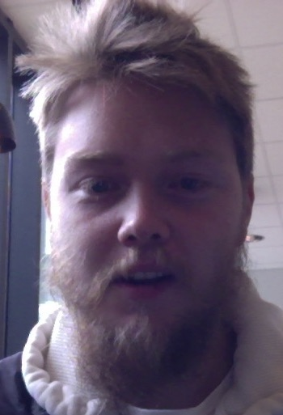

| Daniel Nordrum Pettersen | |
|---|---|
|  | |
| Alder | 28 år |
| Hjemby | Sandefjord |
| Github | h182675 |
Bøker og TV-serier jeg liker
- Bøker
- Klatrebaronen
- 1Q84
- Pillars of the Earth
- TV-serier
- Mr. Robot
- Battlestart Galactica
- Game of Thrones
Om meg
Jeg er 28 år gammel og kommer fra Sandefjord. Har de 3 siste årene jobbet i Oslo og i tillegg studert 1 år på BI ved linjen BBA. Byttet videre til IT nå selv med manglende kunnskap fra tidligere, men har alltid hatt interesse for faget.
Jeg er bruker av både Mac og PC.